Ⅴ · 这一身
5 件父亲的雨衣
承受并化为雨：每场抵挡首次受伤；受伤释放雨滴；代价：射速-18% · 身体变得沉重。
主角体现图

入学通知书
选择变多了，但你不能不选：每章奖励三选一变四选一；代价：不能再跳过奖励，每次必须选走一件。
主角体现图

最新款的 iPhone 17 Pro Max
新机就是快：伤害+30% · 攻速+10%；代价：拾取时零钱清零 · 每15秒弹一次消息，攻击中断0.4秒。
主角体现图

父亲的病历本
你透支得越多，你越强：每永久损失10点最大生命，伤害+8%（无上限）；代价：治疗效果-40%。
主角体现图

Ⅳ · 遗物
19 件

断掉的脊梁骨
负面越多，一口气越重：每条负面词条增伤12% · 每3条负面穿透+1；代价：支付一口气 · 治疗-30% · 永久弯腰。
主角体现图

提前花掉的十年
预支未来的攻击：每10秒提前释放5轮攻击；代价：爆发后停止呼吸2秒。
主角体现图

没有按下发送的离婚协议
拖延成了护甲：首次受伤一半立即结算，另一半阶段末补扣；代价：治疗-15%。
主角体现图

她没说名字的第三颗药
周期性失真：每20秒狂暴8秒（伤害×1.6 射速×1.4）；代价：随后3秒崩落（全属性×0.6）。
主角体现图

已经签好名字的网贷合同
预支的力量：伤害+25%；代价：每阶段先扣2零钱；不足仍扣现有零钱，再扣4生命。
主角体现图

把名字卖掉的合同
制式化：零散射、零波动，基础伤害+30%；代价：永不暴击 · 无法再亲口回应命运。
主角体现图

母亲留在锅里的那碗饭
溢出的爱变护盾：溢出的治疗转为护盾；代价：转化率每阶段-10%（会凉）。
主角体现图

凌晨两点朋友发来的“在吗”
未回复的都在等你：咽下+1层；生命<35%时每层化为5点护盾；代价：每层治疗-3%。
主角体现图

有人替你按住的电梯
弹道在终点等你：弹道消失时30%悬停后追向最近敌人；代价：弹速-8%。
主角体现图

一直没有换的家门锁
回家的路更疼：弹道折返；回程伤害+30%；代价：射程-10%。
主角体现图

验孕棒
身后多了个影子：每第3轮多1枚继承弹；代价：商城价格+35%。
主角体现图

遗照选用的那张
最后的配合：致命伤时1血狂暴5秒（每局一次）；代价：生效后治疗-20%。
主角体现图

和AI聊到凌晨
它复读你：每轮攻击后0.4秒复读一轮回声弹（×0.35）；命运牌结算后回4血；代价：亲口回应的属性变化减半。
主角体现图

关服那天
它替你挡最后一次：致命伤时小剪影替你挡下，然后永远消失；代价：它消失后，治疗-15%。
主角体现图

没有痛觉的夜晚
把伤害延迟成重量：未结算伤害持续提高攻击；代价：8秒后全额结算 · 普通治疗失效。
主角体现图

KTV里没人听的那首歌
攒一口气吼出去：每6秒攒满一口，向四周吼出一圈声浪（继承全部形变）；代价：常规攻击伤害-15%。
主角体现图

冬天呵在玻璃上的字
一口气呵成雾：弹体呵成宽雾锥：弹宽×2.2 · 穿透+2；代价：射程×0.55。
主角体现图

Ⅲ · 心结
21 件同桌的修眉刀
把弹道削得极细：伤害+18% · 暴击+25%；代价：最大生命-8 · 弹宽-55%。
主角体现图


交掉的闪现
受击瞬间闪现躲开：受击时自动闪现躲开这次伤害，冷却9秒；代价：小概率闪向反方向。
主角体现图

雪花屏
这次伤害没有发生：每阶段一次：致命伤化为雪花，没有发生；代价：画面偶尔闪过一帧雪花。
主角体现图

我一直在哭
受伤流出穿透泪：受到伤害时发射3枚穿透眼泪；代价：射程-12%。
主角体现图

领导撤回的六十秒语音
沉默攒成声波：咽下+1层；吐出时每层释放6点声波；代价：每层射速-2%。
主角体现图

全家帮砍仍差一刀的链接
低级道具变奖励：每件Ⅰ/Ⅱ级道具伤害+3%；代价：商城价格+10%。
主角体现图

家长群里的“孩子他爸”
附属更强：雨滴/分裂/弹跳等继承弹伤害+40%；代价：本体伤害-10%。
主角体现图

体检报告上的向上箭头
异常继续异常：高于基准的属性再+8%，低于的再-8%；代价：双向放大，无法回头。
主角体现图

酒局上代喝的那杯
把伤吐还回去：受伤25%概率攒代喝；3层释放累计范围反伤；代价：每阶段开场1.2秒站不稳。
主角体现图

藏在袜子里的烟
提神的代价：受伤后2秒移速+25%；代价：每45秒最大生命-1。
主角体现图

对方正在输入…
三个点以后，话向四面散开：头顶每0.5秒出现1个点；第3点触发12向大范围散射，继承当前弹体机制；代价：取消普通连射，改为每1.5秒结算1轮散射。
主角体现图

年度听歌报告
单曲循环：每第4轮把上一轮弹道原样重放一遍（×0.6）；代价：每阶段开场生命-2。
主角体现图

momo的头像
匿名的胆量：无敌人贴脸时暴击+25%；代价：被贴脸时伤害-8%。
主角体现图
对方已开启朋友验证
一个人也行：每次商城不买离开伤害+6%（可叠）；代价：治疗-10%。
主角体现图

眼保健操
闭眼的半秒：每12秒自动闭眼获得0.5秒无敌；代价：睁眼后1.5秒敌人加速。
主角体现图

Ⅱ · 旧物
27 件


裂了一边的眼镜
远距精确射击：射程+55% · 暴击+14%；代价：弹宽-35%。
主角体现图

小了一号的校服
束缚换取速度：射速+22%；代价：最大生命-6 · 弹宽-15%。
主角体现图

出租屋唯一的钥匙
终点打开一扇门：弹道消失时产生小型爆炸；代价：射程-12%。
主角体现图


药房最下面的白瓶子
透支身体加速攻击：射速+30%；代价：每场开始失去2生命 · 伤害-10%。
主角体现图

憋回去的那泡尿
站着不动越憋越狠：站定时伤害持续积攒，最高+60%；代价：移速-8%。
主角体现图

课间十分钟
开场十秒撒欢：每阶段前10秒移速+35%、射速+25%；代价：结束后疲惫3秒，移速-15%。
主角体现图

暑假作业最后一页
死线前爆发：每阶段最后10秒伤害翻倍；代价：阶段前30秒伤害-10%。
主角体现图

五个哈
五连发：攻击变为五连发，一发比一发轻（总量微升）；代价：治疗-15%。
主角体现图

朋友圈仅三天可见
三圈后放手：拾取任何道具后，3枚当前弹体绕身三圈，再向外释放；代价：治疗-5%。
主角体现图

凌晨三点的已读
已读不回：命中不立即结算：5秒后连本带利×1.3一次爆出；代价：目标提前倒下则挂账落空。
主角体现图

凌晨三点的外卖袋
低血缓慢回补：生命<40%时每2秒回1；代价：主动治疗-15%。
主角体现图

自动续费到明年的会员
开场自动增益：每阶段前15秒伤害+10%；代价：每阶段扣1零钱。
主角体现图

相亲桌上没拆的矿泉水
对峙：每对峙满8秒无伤：最近的敌人先绷不住，重创+僵直；代价：受伤重新计时。
主角体现图

医院走廊的共享充电宝
租来的精力：攻击空窗租电，恢复攻击时短暂连射加速；代价：每累计租电8秒扣1零钱。
主角体现图

外卖里吃出的头发
将就的一口：生命<30%时自动回8（每阶段一次）；代价：所有治疗-10%。
主角体现图

没洗的枕套
躺平减伤：静止2秒后减伤50%；代价：起身后1秒射速-20%。
主角体现图

连续签到1847天
打卡节律：每个整10秒的第一发必定暴击（准时）；代价：受伤打断当期打卡。
主角体现图

晚安之后的两小时
熬出来的精神：生命<50%时射速+18%；代价：每30秒最大生命-1。
主角体现图

练了一个暑假的跑法
那年最快的姿势：移速+12%；代价：急停会滑半步。
主角体现图

再来一把就睡
不甘心的续航：章末可跳过回复；伤害+10%一层（最多5层）；代价：每层令下阶段开场停火0.5秒。
主角体现图

大扫除清掉的卡册
借来的强度：每阶段随机+12%伤害/射速/射程；代价：阶段结束即消失。
主角体现图

抽象话十级
嘲讽拉满：每8秒嘲讽最近非Boss敌人：受伤+20%但冲向你；代价：咽下效果-10%。
主角体现图

小卖部的冰柜
冰雾缠弹：命中20%冻结敌人1.2秒；代价：射速-5%。
主角体现图

Ⅰ · 杂物
5 件校服上掉下来的纽扣
规律地多射一发：每第3轮攻击额外+1弹，没有负面作用。
主角体现图

床底下的木剑
近距离重击：伤害+45% · 弹宽+30%；代价：射程-35%。
主角体现图

抢到的0.87元红包
零碎的快乐：击杀15%概率掉一枚零钱，没有负面作用。
主角体现图

当年最强的那颗弹珠
还会弹：命中25%概率弹向另一个敌人，没有负面作用。
主角体现图

健身房年卡
花钱买的自觉：移速+8%；代价：每阶段扣1零钱。
主角体现图

组合名鉴 · 奥义插画
12 组 · 集齐的瞬间在战场上浮现 3.4 秒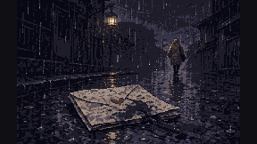
《那天雨太大，我没有听见》
集齐 · 前桌的情书、父亲的雨衣
信纸被浸湿，变慢、变重、穿透
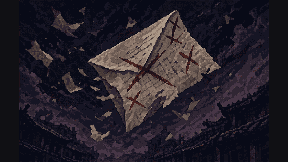
《被退回的信》
集齐 · 写满红叉的练习册、前桌的情书
未命中的信被红笔批改后折返，二次命中更疼
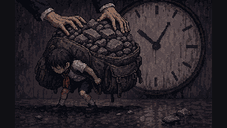
《大人说这都是为你好》
集齐 · 装满石头的书包、慢了七分钟的手表
冻结解除后，一口气一次性压穿敌群
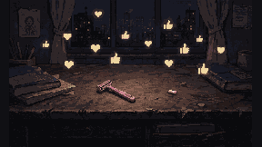
《被当成风格的求救》
集齐 · 同桌的修眉刀、OD妹给的小药丸
受伤时涌出点赞与爱心，不提供任何治疗
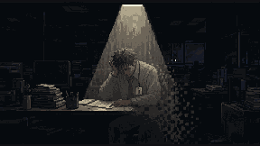
《我只在有用时被看见》
集齐 · 第一次工资的信封、没有商标的领带、已经注销的旧工牌
刚证明过有用的两秒里，他格外锋利
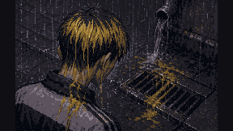
《那年他觉得自己很酷》
集齐 · 剩了半袋的漂粉、父亲的雨衣
掉色的雨滴标记敌人，被标记者受伤更多
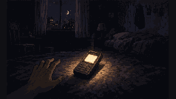
《这一次有人接了》
集齐 · 同桌的修眉刀、OD妹给的小药丸、没打出去的电话
攒下的假点赞在吐出时化为真实护盾
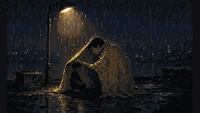
《后来我也成了他》
集齐 · 女儿换下的乳牙、父亲的雨衣
乳牙碎的那一刻，雨衣自动罩住孩子
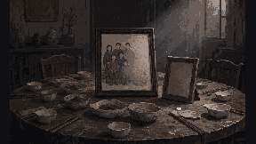
《等大家有空》
集齐 · 少了一个人的合照、一直空着的相框
空相框复制合照的弹道，每次复制更褪色
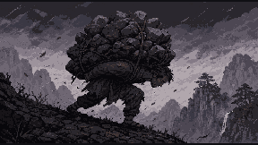
《这点重量不算什么》
集齐 · 断掉的脊梁骨、装满石头的书包
弹道停留越久越重，压得越深
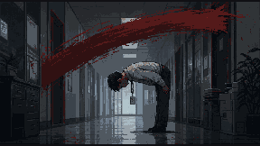
《能屈能伸》
集齐 · 断掉的脊梁骨、没有商标的领带、已经注销的旧工牌
弯腰的程度化为暴击，暴击时他说「收到」
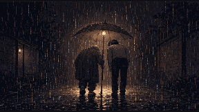
《他当年也是这样站着的》
集齐 · 断掉的脊梁骨、父亲的雨衣
身后浮现同样弯腰的轮廓，雨下得更密